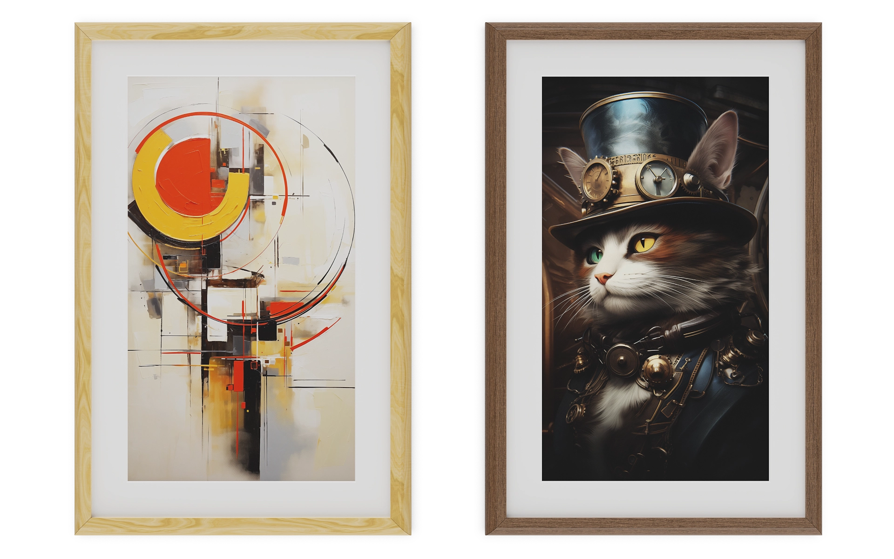

類紙感數位畫框與 CMS
低反光表面搭配環境光調整，呈現類紙質感。
將數位畫作帶入居家與展示空間，需要兼顧觀看質感與內容更新。螢幕反光，以及與周遭光線不協調的亮度和色溫，都會影響畫作融入空間的效果。本案選用超低反光、抗眩光的螢幕表面材質，搭配環境光感測器調整色溫與亮度，共同呈現接近紙質畫作的觀感。開發從早期本機感測原型延伸至 CMS 連網版本，串接合作夥伴的平台遠端更新畫作，兼顧展示質感與日常管理需求。
開發範圍畫框端 Android App、環境光感測器硬體與韌體；串接合作夥伴的 CMS。

01 / ARCHITECTURE
雲端內容更新路徑。
系統架構由低反光顯示表面、環境感測調節與合作夥伴 CMS 內容更新三部分構成，兼顧觀看質感與遠端管理。
手機 BLE 配網
手機 App 搜尋探索畫框裝置，快速配置現場 Wi-Fi 連線與認證。
雲端 CMS 內容派送
畫框連網對接 CMS 內容管理伺服器，自動接收高解析數位畫作與排程。
手機雲端裝置控制
手機 App 可切換播放清單、調整亮度與色溫，並控制螢幕休眠。

02 / IMPLEMENTATION
感測硬體適配。
從本機感測原型到 CMS 連網量產，整合 27 吋類紙感顯示與內容管理。
多感測器硬體整合
整合手勢、重力與環境光感測器，開發 MCU 取樣韌體。
環境光數據平滑處理
平滑處理環境光數據，再送入 Android 顯示核心，讓亮度變化更平順。
環境色溫自適應
環境光感測器即時取樣環境光線，透過 I²C / UART 介面調整 Android 顯示層的色溫與亮度。

03 / OUTCOME
智慧藝術畫框量產
CMS 連網版本成功推進至量產銷售階段，完成了畫框端 Android App 開發、感測器硬體與取樣韌體整合，以及由合作夥伴開發的雲端內容管理平台串接。